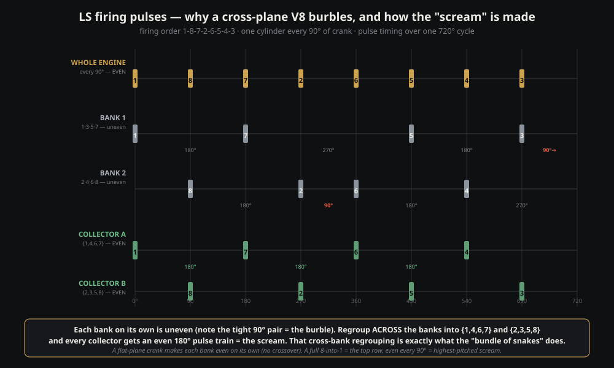
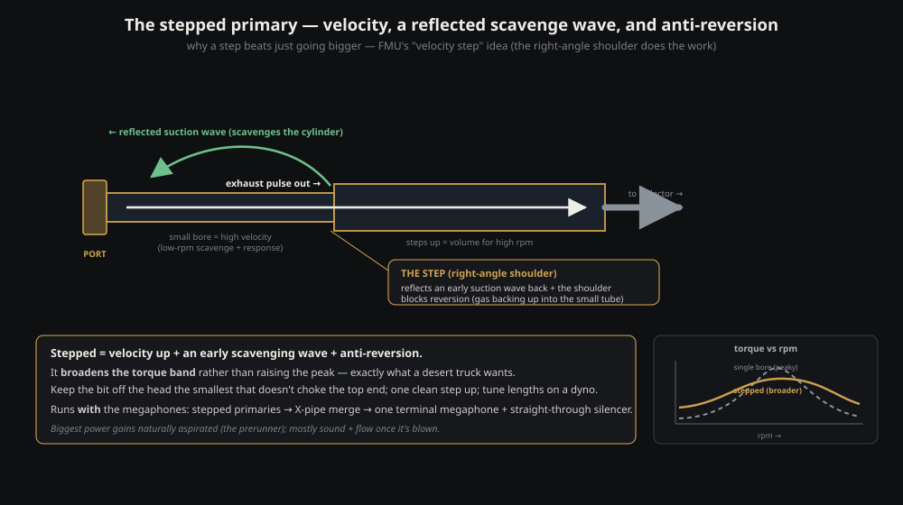
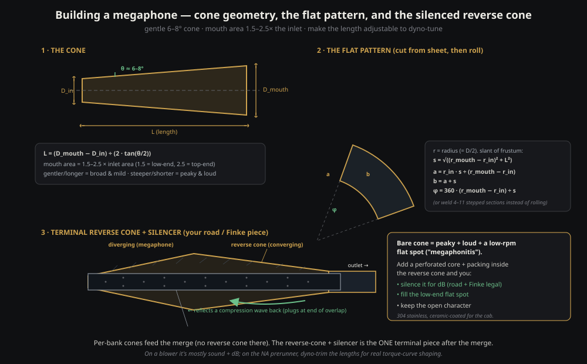
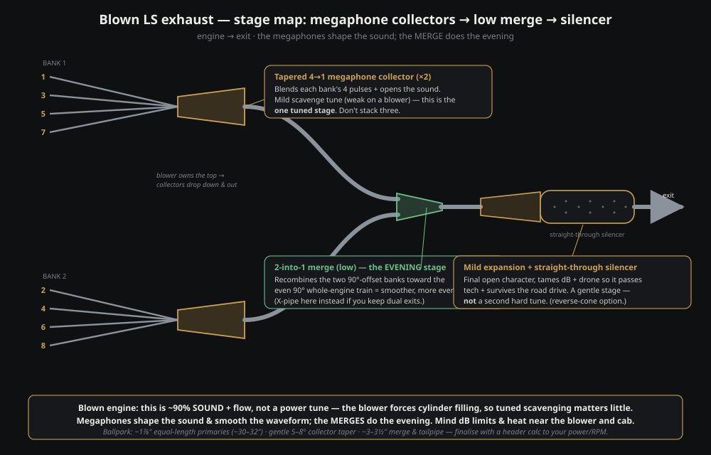
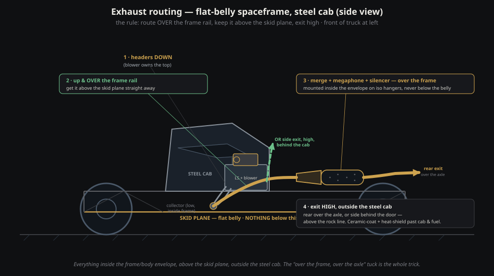

The LS exhaust howl
Why a cross-plane LS burbles instead of screams, and how to build a stepped, megaphone-tuned, spaceframe-routed exhaust that broadens the torque curve a naturally aspirated desert truck actually races on — from firing order to reverse cone, with honest dyno-trim caveats throughout.
1 · The firing order, and why it won't scream
The LS firing order is 1-8-7-2-6-5-4-3 (the "4/7 swap" off the old small-block's 1-8-4-3-6-5-7-2). Bank 1 (left) is cylinders 1·3·5·7; Bank 2 (right) is 2·4·6·8. It's a 90° cross-plane crank, so the whole engine fires perfectly evenly — once every 90°. The unevenness lives only inside each bank.
- Pull Bank 1 out alone and it fires at 0 / 180 / 450 / 630 → gaps of 180°, 270°, 180°, 90°.
- Bank 2 fires at 90 / 270 / 360 / 540 → gaps of 180°, 90°, 180°, 270°.
- That 90° back-to-back pair then a long wait is the burble. A scream is evenly-spaced pulses; a burble is uneven ones.
- So a normal 4-into-1-per-bank header on a cross-plane V8 can never scream — the collector is fed an uneven drumbeat.
- A flat-plane crank (180° throws) makes each bank fire evenly at 180° — which is why Ferraris and race V8s scream on simple per-bank headers with no crossover.

2 · The bundle of snakes — and the honest fork
To feed a collector an even pulse train on a cross-plane crank you have to regroup cylinders across both banks — no single bank is even on its own. The only even groupings are Collector A = {1, 4, 6, 7} (0/180/360/540) and Collector B = {2, 3, 5, 8} (90/270/450/630). In Collector A, 1 and 7 live on the left while 4 and 6 live on the right — so the equal-length tubes must cross the V. That cross-bank routing is the "bundle of snakes" — the geometric price, not arbitrary ugliness.
The brutal fork: even pulses + zero crossover ⇒ flat-plane crank. Cross-plane crank ⇒ something must cross. Everything else is choosing what crosses, and where.
A different firing order won't save you (only flat-plane geometry makes a bank even), and a true 8-into-1 is even at 90° on either crank but merges both banks by definition — so it crosses too.
3 · The smart-money answer (why the X-pipe wins)
The sweet spot, and what to build first: a tidy equal-length 4-into-1 per bank, routed down and out, then one X-pipe (or a single low merged collector) downstream. It's cleverer than it looks — Bank 2's pulse train is just Bank 1's shifted 90°, so joining them downstream literally rejoins the two halves of the even 90° whole-engine train. Call it 80% of the sound for 20% of the mess, and it keeps the midrange Finke actually lives in.
- Keep primaries equal length — that's what preserves the even firing to the collector; unequal lengths smear the timing and muddy everything.
- For a true even scream, accept the trades: a flat-plane crank (clean 4-1 per side, no crossover — but $$$, a rebalance and real high-frequency buzz), or a CAD'd equal-length 180° / 8-into-1 crossover routed low through the chassis tunnel.
- NA vs blown: a turbo would kill the scream (it's a giant muffler that eats pulse energy); a blower keeps the exhaust open so the scream survives, but layers whine over the top.
4 · Stepped primaries — velocity, not back-pressure
The Fluid MotorUnion playbook in one line: don't chase back-pressure — keep gas velocity high while minimising resistance. That's why you step diameters instead of just going bigger. A stepped pipe does three jobs at once:
- Velocity — a small section off the head keeps speed up (keep the first ~15–20 cm the smallest ID that doesn't choke the top end).
- Scavenge — at each step the diameter increase reflects a rarefaction (suction) wave back toward the cylinder to help draw it out during overlap.
- Anti-reversion — the step shoulder resists reversion. The "right-angle" step is legit; the shoulder is doing the work.
Two knobs, kept separate: how abrupt (a sharp square step = one strong, narrow-band pulse + strongest anti-reversion; a gradual taper = weaker but broader) and where it sits (closer to the valve = wave back sooner = higher rpm; farther out = lower rpm). FMU netted a real ~32 wheel-hp on a C6 Corvette with stepped sections, placed megaphones and a rethought crossover; a third-gen Camaro LS3 swap went 392 whp on long-tubes to a velocity-stepped rebuild (narrowing to 2.75" where velocity demanded, back to 3" where volume mattered, plus a merge X and megaphone sections).

Stepped broadens the curve rather than raising the peak — "robbing rpm you don't use to feed rpm you do." On a big-displacement, high-rpm engine (an LS qualifies) that pays, and for a desert truck a broader band is a feature, not a bug. The magnitude is modest and the step must be precisely sized and located — a bolt-on anti-reversion collar can do nothing or even hurt. Get a starting point from Burns Stainless specs, then dyno-develop rpm-by-rpm.
5 · What a megaphone actually does (and doesn't)
A megaphone is a diverging cone: a pressure pulse hitting the expansion reflects back as a suction wave; timed into overlap it helps scavenge for a power bump in a specific rpm band. It also smooths the pressure waveform (softer edges, less thud) and gives the open, building race-howl.
- What it is: sound character + a band-specific scavenge tune. What it isn't: a fix for the cross-plane uneven timing — that's set by firing order. The merges do the evening; the megaphone shapes how it sounds.
- A reverse-cone megaphone reflects a compression wave instead — it "plugs" the cylinder at the end of overlap (broadens the band) and tames the open blare; often the smarter terminal piece for a road-registered truck.
- Don't stack three hard tuned stages — two bank megaphones plus a final megaphone is three reflection sources that fight and smear. Make the bank collectors the one tuned stage; let the final element be a gentle expansion + silencer.
- NA vs blown: on a blower this is ~90% sound and flow (the blower forces filling); on the NA prerunner the megaphone is worth dyno-developing for real torque-curve shaping.
6 · The three numbers that define a megaphone
- Cone angle (included): the experimentally-derived "most efficient" figure is ~7–8° — the default. Gentler/longer = milder wave over a broader band; steeper/shorter = stronger but peakier and louder. A desert truck wanting fat, wide torque stays gentle (~6–8°); a short steep cone is a top-end peak-chaser and the source of "megaphonitis" (a low-rpm flat spot).
- Area ratio (mouth ÷ inlet): for a 4-stroke the mouth is 1.5× to 2.5× the inlet area (not the ~6× of a two-stroke). 1.5× biases low-end, 2.5× biases top-end.
- Length:
L = (D_mouth − D_inlet) ÷ (2 × tan(½ angle)). Separately, the effective/tuned length (valve to the cone's reflection point) sets which rpm the returned suction wave helps — longer = lower rpm. Build it slip-fit adjustable to move on the dyno.
Worked example for a 2.75" collector outlet (area ≈ 5.9 in²): at 2× area → mouth ≈ 3.9", about 8" long at 8° (≈ 11" at 6°); at 1.5× area → mouth ≈ 3.4", a shorter cone with more low-end bias. So a per-bank megaphone in the order of 2.75" in → ~3.4–3.9" mouth → ~8–11" long at 6–8° — starting points to dyno-trim, not gospel.

7 · The terminal reverse cone, and getting legal
In this layout the per-bank cones feed the merge, and the reverse cone lives at the terminal, after the merge. It tapers back down to a smaller outlet, reflects a compression wave, and tames the blare.
- Pure tuned version: nothing inside — peaky and loud.
- Street/desert version (what you want): a perforated core + packing (mineral/stainless wool) inside the reverse-cone can. It silences for dB and cures megaphonitis (fills the low-rpm flat spot). One terminal element that keeps the character, passes tech, and survives the drive.
- dB limits are real — Finke and SA road rego both have noise limits; a bare open megaphone will almost certainly fail and be brutal on a long drive. Plan a straight-through perforated silencer (~3–3½" core) from the start. (Allen Motorsports' quiet F100 ran 180° headers + multiple mufflers + copper coat — the quiet path is mufflers, not an open pipe.)

Building the cone: best is to develop the flat pattern (a frustum unrolls to an annular sector), cut from sheet, roll, tack, check round, weld and grind; the budget way is to slit a straight tube and hammer-form it in a vice (face the seam down so it disappears inside); or weld up 4–11 equal-length sections each one tube-size larger for a faceted "megaphone." Material: 304 stainless for desert duty, ceramic-coated or wrapped to keep heat out of the cab.
8 · Routing it through a steel-cab spaceframe
The constraints write the route. The flat belly is the skid plane — anything below the frame line drags, so under-floor routing is out — and a steel cab means the pipe goes around the cab, not through it. So: keep it inside the frame/body envelope, above the skid plane, and exit high.
- The desert rule: route OVER the frame rail, exit high. Up and over the top of the rail so it sits above the skid plane, tucked inside the body, then back and over the rear axle if going rearward. Never under.
- Engine → exit: headers drop off the heads, collectors low but inside the frame → immediately turn up and over the rail (this buys the ground clearance) → run rearward inside the bodyside, above the rail → mount merge + megaphone + silencer inside the envelope (the silencer can is the bulkiest bit — never let it hang below the rail) → exit high, side behind the cab or rear over the axle.
- Respect the door opening — keep the pipe below the door line (through the rocker/sill) or behind the door, never across the opening. The frame-depth channel between cabin floor and belly skid is fair game (skid below, floor above).
- Heat + protection: ceramic- or copper-coat the headers and pipe (standard TT practice), heat shield anywhere it passes the cab, fuel cell, lines or harness, and mount on iso/spring hangers — a spaceframe flexes, so let the system float or it cracks pipes and cans. Slip-fit the megaphone so you can dyno-trim it.

Key takeaways
- On a cross-plane LS, something must cross the V to scream — the bundle of snakes is geometry. The 80/20 answer is equal-length 4-1 per bank + one downstream X-pipe.
- Chase velocity, not back-pressure. Stepped primaries broaden the torque curve and fight reversion — exactly what a desert truck wants. FMU got a real ~32 whp doing it.
- A megaphone is sound + a band-specific scavenge tune — the merges even the pulses, the cone shapes the note. Default ~7° cones, mouth 1.5–2× inlet area, made adjustable.
- One terminal reverse-cone with a perforated/packed core does triple duty: dB compliance, cures megaphonitis, keeps the character. Don't stack three tuned stages.
- NA is where the engineering pays. Stepped + X + megaphone is real power on the NA prerunner; on a blown engine it's ~90% sound. Route everything over the frame, above the skid, exit high.
Honesty notes. Every megaphone number is a dyno-trim starting point, not gospel — megaphones are genuinely hard to nail, so the serious crowd builds several lengths and dynos them (make yours slip-fit). Stepped gains are modest and location-sensitive. Best-sounding ≠ best-driving: chasing perfectly even pulses can trade away the fat midrange the truck races on. And the whole wave-tuning argument shrinks to "sound + flow" if the engine ends up blown — see the companion piece below.